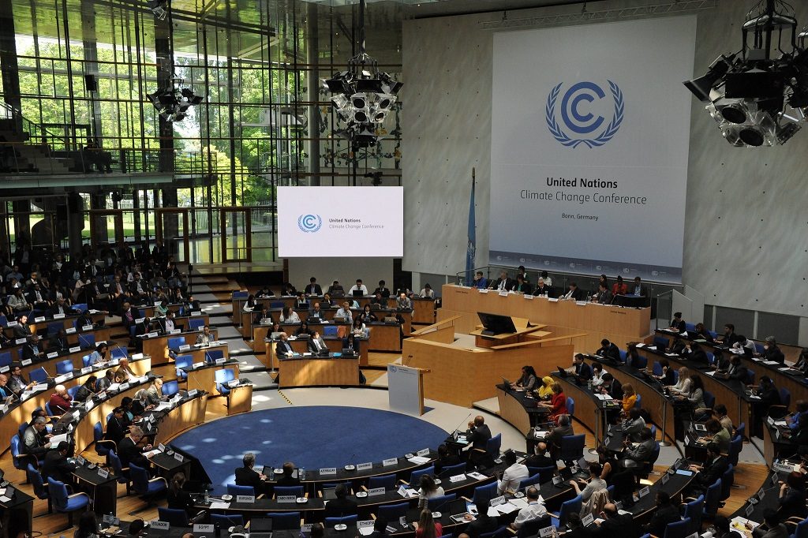
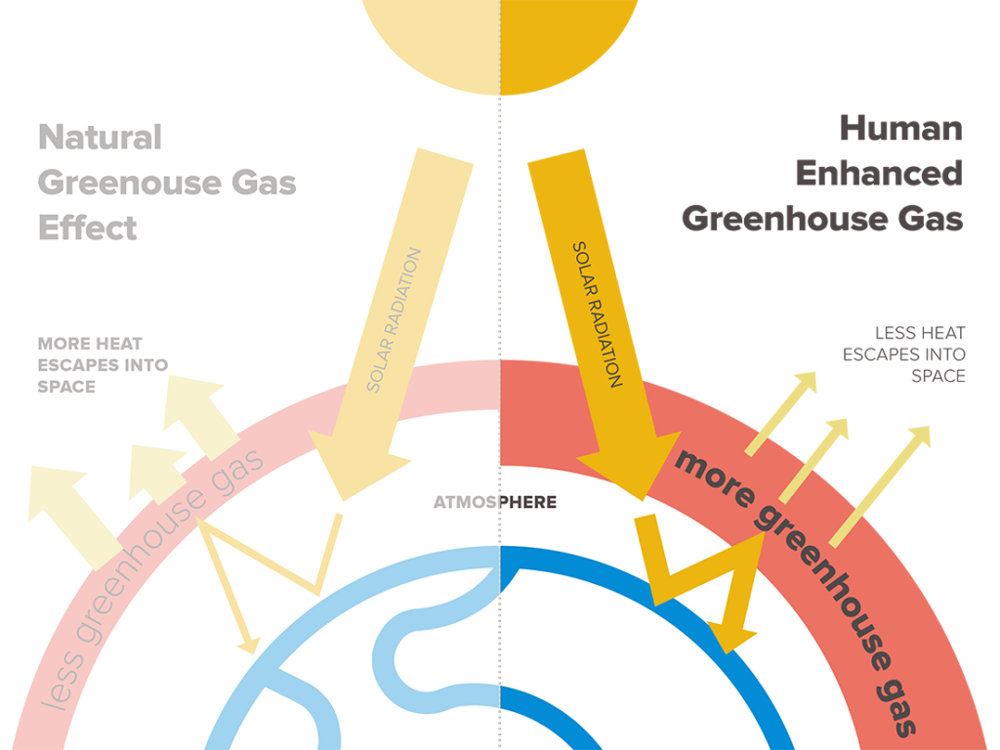
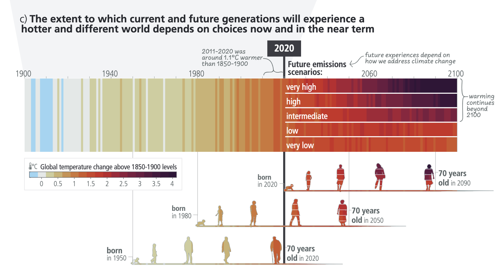
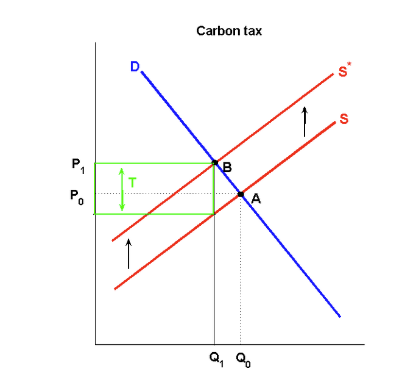

14 The Economics of Climate Change
14.1 UN Framework Convention on Climate Change
- At the 1992 Earth Summit in Rio de Janeiro, more than 150 countries made a commitment to action to avert dangerous man-made effects on the global climate, by signing the UN Framework Convention on Climate Change. They were acting in response to the growing scientific evidence from the Intergovernmental Panel on Climate Change (IPCC) that rising levels of greenhouse gases in the atmosphere, arising from human activity, were starting to have a noticeable and potentially damaging impact on the global climate. Further negotiations then led to the Kyoto Protocol, agreed in 1997, under which a number of industrial countries took on binding commitments to reduce their emissions of a basket of the principal greenhouse gases.

- The Kyoto target for emissions reductions was relatively small (a 5.2% cut in emissions by 2012, measured against 1990 levels), and applied only to the group of industrialized countries that signed the protocol. Although these countries are on track to achieve the target, global emissions have been growing rapidly, in particular because of spiralling energy demand in China and other fast-growing developing countries.
14.2 Greenhouse gases and climate change
Global climate change negotiations are driven by concerns about the process of global warming, which is likely to result from an increased accumulation of greenhouse gases (GHGs) in the atmosphere. The most significant greenhouse gas, in quantitative terms, is carbon dioxide, which contributes about two-thirds of the total global warming impact of greenhouse gas emissions. Human activity leads to carbon dioxide emissions principally through the combustion of fossil fuels – the use of coal, oil, and gas in industrial processes, to generate electricity, as motor fuels, and for domestic heating.
In addition to carbon dioxide, the other significant greenhouse gases include methane, nitrous oxide, and CFCs (chlorofluorocarbons, chemicals used as aerosol propellants, refrigerants, and in various industrial processes). Per tonne emitted, these gases vary widely in the harm they do. Each tonne of methane emissions has an impact on global warming equivalent to 23 tonnes of carbon dioxide, while some CFCs have a global warming potential equivalent to a thousand tonnes or more of carbon dioxide.

Levels of carbon dioxide and other greenhouse gases in the atmosphere have been rising steadily ever since the Industrial Revolution. In 1850, the atmosphere contained some 290 parts per million by volume (ppmv) of greenhouse gases, and this has now risen to 430 ppmv, and is increasing at some 2.3 ppmv annually. Over the course of the 20th century, the Earth warmed by about 0.7 degrees Celsius. The rate of warming appears to be accelerating, with a temperature rise of 0.2°C in each of the last three decades.
Forecasting the growth of emissions and the concentration of greenhouse gases in the atmosphere needs to take account of future economic growth – including the very rapid industrialization of China, India, and other developing countries – and the development of energy technologies. The Stern Review on the Economics of Climate Change summarized the available evidence and estimates. It suggested that future growth in emissions could lead to an atmospheric concentration of 550 ppmv by 2050, and that the annual rate of increase in concentration would by then have reached 4.5 ppmv, and would still be increasing. By the end of the century, atmospheric concentrations could exceed 850 ppmv, more than three times pre-industrial levels.
Although people often talk about ‘global warming’ and ‘climate change’ interchangeably, climate scientists and policy-makers are increasingly conscious that the issues are not simply limited to a general rise in global temperatures. Some of the most important issues concern the uneven geographical distribution of climate changes, and the likely increase in climate instability. While global temperatures may rise on average, some areas may become very much warmer, while others may experience less rise in temperature. Effects on the pattern of rainfall may be large and uneven, with possibly drastic effects on the viability of agriculture in some areas. Above all, there is now a recognition that global climate change may involve increased instability in climate patterns, and increased frequency and severity of extreme events – hurricanes, floods, forest fires, and the like.
14.3 What is distinctive about climate change policy?
The structure of the economic issues reflects some key characteristics of the underlying physical processes and the nature of the scientific evidence about them. The problem is generated by an accumulation of emissions rather than the level of emissions in any one year, it is surrounded by substantial uncertainty about the scale and pattern of effects, there is a possibility of catastrophic and/or irreversible effects, and many of the effects of current emissions and policy measures will be experienced in the distant future.
The physical process of global warming is a dynamic process, developing over a long time scale, in which damage is done as a result of the stock of carbon dioxide and other greenhouse gases accumulated in the atmosphere, rather than the annual emissions flow. The stock is, of course, the result of past and current emissions. Each year’s emissions add a further increment to the stock, in other words to the concentration of greenhouse gases in the global atmosphere. This means, of course, that halting or reversing global climate change will be extremely difficult. Cutting the level of annual greenhouse gas emissions from now on, even quite sharply, may still not prevent increases in the stock of greenhouse gases in the atmosphere, albeit at a slower rate than without any emissions cuts.

14.4 Future generations
- In one other crucial respect, global warming is unlike any other major public policy decision. A huge part of the damage from global warming – and hence the benefits from any policy action taken now – would be borne by future generations, including many generations as yet unborn. When judging how much action we should take to control current emissions, how can we properly reflect the interests of future generations? On what basis should we weigh the interests of future generations against the interests of the current generation, who will have to bear substantial abatement costs, while not living long enough to experience many of the benefits?
14.5 A carbon tax
A carbon tax works by taxing fossil fuels in proportion to carbon content. Per unit of energy, coal is taxed more heavily than oil and natural gas, while non-fossil-fuel sources of energy are untaxed. Burning fuel containing a given quantity of carbon leads predictably and unavoidably to a given amount of carbon dioxide emissions, so that a tax on the carbon content of fuels is almost equivalent to taxing carbon dioxide emissions themselves. With the exception of carbon-capture-and-storage technologies that may shortly become available for power stations no viable end-of-pipe cleaning technologies for carbon dioxide emissions are currently available.
Taxing carbon would encourage energy users to substitute away from high-carbon energy sources towards fuels with lower emissions per unit of energy. If levied on the fuels used by power stations, for example, a carbon tax would encourage a shift away from power generation using coal towards oil and gas, and even more strongly towards untaxed renewables (wind and wave power), and towards nuclear energy.

- Suppose that a carbon tax T is added into the price. For a given quantity, the supplier’s price will be the old price plus the amount of the tax, and the supply curve will shift up to S*. The new equilibrium is at point B, the quantity is the target Q1, and the price will increase to P1.
14.6 International climate negotiations: prospects for success
Global warming is a global problem. Emissions contribute equally to damage regardless of their source: a tonne of carbon dioxide emitted from the US or Europe is no more or less damaging than a tonne emitted from China or India. Likewise, the damage experienced by any country is a function of global emissions. Individual countries’ emissions or abatement affect the level of climate change damage they experience only through their impact on the concentration of greenhouse gases in the global atmosphere. The global nature of the problem calls for corresponding global action if the risk of catastrophic climate change is to be tackled effectively.
Ideally, the international agreement needs to encompass all countries, since this would spread the burden of carbon abatement costs most widely, and hence reduce the costs that each country needs to bear. However, getting countries to sign up to an agreement is made difficult by the temptation of free-riding. For any country, staying outside an international agreement on climate change offers the prospect of benefits without costs. A nonsignatory avoids incurring any abatement costs, but would still experience all of the benefits from greenhouse gas abatement measures undertaken by those countries that do sign up to the agreement.
The obstacles to reaching a successful climate change agreement are real and substantial: both the temptation of free-riding and disagreement about burden-sharing pose major challenges. Despite the large measure of scientific agreement about the growing risks of climate change – as reflected in the increasingly urgent tone of the reports from the Intergovernmental Panel on Climate Change – the 2009 summit in Copenhagen which was intended to agree a successor to the Kyoto Protocol failed to reach any meaningful deal on coordinated action. Environmental economics cannot sidestep the negotiating realities – any more than the extensive scientific evidence has done. But it can provide evidence that the scientific case for action is matched by a convincing economic case that the long-run benefits of action will be greater than the costs of carbon abatement. Equally importantly, it has helped to show how policy instruments such as emissions trading and taxation can provide the market signals that will be needed to steer the global economy towards a low-carbon future.
Assignment:
Please check the KUTLMS.